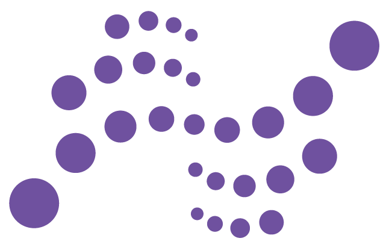

We employ systematic options premium harvesting strategies in digital asset markets through disciplined signal generation, staged short-dated entries, and risk-controlled execution designed for stable risk-adjusted returns.
A systematic options premium harvesting approach focused on generating income from digital asset options markets.
Our strategy is built around a recurring structural feature of digital asset options markets: implied volatility has consistently traded above realised volatility, creating a durable source of premium for disciplined option sellers.
In high-volatility environments, hedging demand often rises sharply—especially during market downturns—supporting premium levels and creating attractive opportunities for systematic, risk-managed short option positioning.
Systematic volatility, momentum, and mean-reversion signals guide strike selection and exposure timing.
Time-diversified entries across consecutive short-dated cycles reduce single entry-point concentration risk.
Execution is concentrated in mainstream, liquid digital asset options markets with robust operational discipline.
The core building blocks of the strategy's signal framework, portfolio construction, and execution discipline.
Volatility conditions are assessed to target strike ranges with low exercise probability and strong time-decay characteristics.
Short-term state signals help amplify, maintain, or pause exposure depending on changing market regimes.
Algorithmic pre-filters help identify assets prone to sharp volatility expansion so exposure can be reduced when risk is elevated.
Progressive replacement of expiring positions keeps the portfolio continuously engaged while stabilising overall risk exposure.
Initial live fund performance since launch, highlighting return stability and downside control in volatile crypto markets.
+4.65%
Initial deployment month with stable premium capture and controlled realised drawdown.
This section will be updated on a monthly basis as additional live performance data becomes available.
For qualified investors interested in strategy details, research materials, fund capacity, or live performance updates, please contact us directly by email or Telegram.
daqian.wu@smartdefusion.comTelegram: @smart_defusion